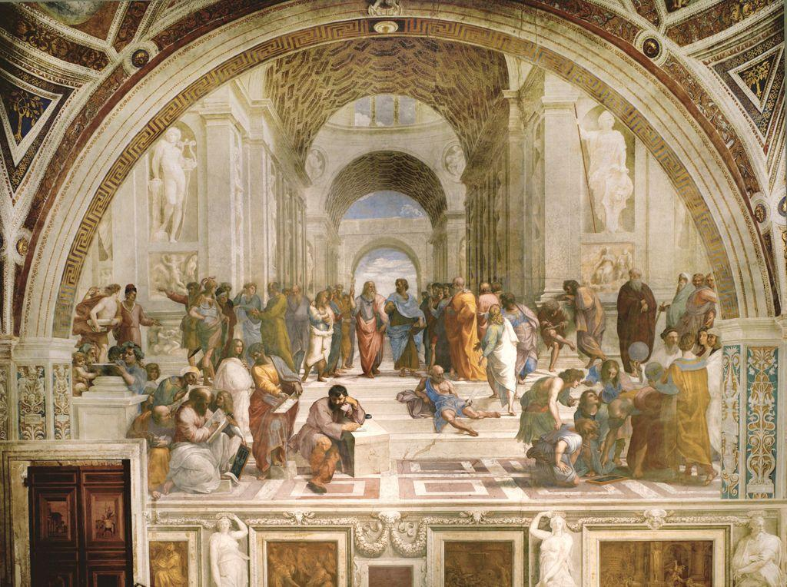

How can a flat wall be made to open like a window into a room you could walk into?
Medieval painters stacked figures up the panel to show distance, and the result looks flat to modern eyes. Renaissance artists worked out the geometry that fools the eye into seeing real depth. Once you know the rule, you can see it everywhere, and you can draw it yourself.
🎯 BY THE END OF THIS LESSON YOU WILL BE ABLE TO…
1
I will be able to define linear perspective and identify the horizon line, vanishing point, and orthogonals.
2
I will be able to explain how one-point perspective and foreshortening create the illusion of deep space.
3
I will be able to sketch a one-point perspective box and prepare for the One-Point Perspective Drawing.
📋 WHAT YOU NEED FOR THIS LESSON
▶
Paper, a pencil, and a ruler or any straight edge; this lesson sets up your One-Point Perspective Drawing
▶
The terms from Lesson 7.01 (humanism, naturalism) for context on why depth mattered
📚 PART 1 · LOOK FIRST~12 MIN
👀 LOOK CLOSELY · FOLLOW THE FLOOR INTO THE DISTANCE
Look at this great hall of philosophers. The figures stand on a floor that seems to run far back, under arches that shrink into the distance. Lay a finger on the edges of the building and the floor tiles. Notice how all those lines seem to aim toward a single spot, just behind the two men at the center. That spot is the secret of the whole illusion.

The School of Athens, Raphael, c. 1510–1512. Apostolic Palace, Vatican. Public domain.
Raphael gathered the great thinkers of antiquity into one imagined hall. What makes the space feel real is not just the figures but the architecture receding behind them. The vaulted ceiling, the floor, and the building all pull back toward the center, so we feel we could walk past Plato and Aristotle into the rooms beyond. This is linear perspective at work: a geometric system for drawing depth.
📚 PART 2 · THE RULE OF DEEP SPACE~16 MIN
In linear perspective, first worked out in Florence in the early 1400s, you start with a horizon line, which sits at the viewer's eye level. On that line you place a vanishing point. Then every edge that runs away from the viewer, the sides of a floor, a wall, or a row of columns, is drawn as a line that aims straight at that point. Those receding edges are called orthogonals. Because they all converge on one point, the system here is called one-point perspective. Objects also get smaller as they near the vanishing point, which is why distant things look small.
Receding edges (orthogonals, in coral) all aim at one vanishing point on the horizon line. Evenly spaced tiles (navy) crowd closer as they recede, so the floor reads as deep space.
A related trick is foreshortening: when an object points toward you, its near parts look large and its far parts look compressed, so a pointing arm or an outstretched leg appears to thrust into or out of the picture. Together, these tools let Renaissance painters build a believable world inside a frame.
✅ CHECK YOUR UNDERSTANDING
In one-point perspective, the orthogonals all meet at the…
The horizon line in linear perspective is placed at…
Describe: A crowd of philosophers stands and sits across a vast vaulted hall. Two central figures walk forward beneath a series of receding arches; statues stand in niches on either side.
Analyze:Linear perspective drives the design: the architecture's orthogonals converge on a vanishing point right between the two central thinkers, so the deepest space frames the most important figures.
Interpret: The geometry is also an argument. By placing the vanishing point behind Plato and Aristotle, Raphael makes the structure of the room point to the structure of knowledge itself.
Judge: It succeeds as a showpiece of the High Renaissance: perspective, balance, and meaning fuse so that the method serves the message rather than showing off.
👀 FLIP TO CHECK · CLICK EACH CARD
Cover the terms above. Can you recall each one? Click a card to flip it.
Linear perspective
A geometric system for drawing deep space on a flat surface.
Vanishing point
The single point on the horizon where all orthogonals converge.
Horizon line
A level line at the viewer's eye level where the vanishing point sits.
Orthogonals
Receding edges that aim straight at the vanishing point.
⚠️ WORTH KNOWING · AI & A LEARNABLE SYSTEM
Perspective is a precise, learnable geometric system; that is exactly why the Renaissance could spread it from one workshop to all of Europe. An AI tool can generate an image that looks like it has perspective, and it sometimes gets the geometry wrong, with lines that do not actually converge. Drawing a perspective grid by hand is different: it builds the spatial reasoning that lets you judge whether any image, made by a person or a machine, is constructed correctly. The skill is in the doing.
📖 VOCABULARY FROM THIS LESSON
Linear perspective
A geometric system for creating the illusion of deep space on a flat surface.
Vanishing point
The single point on the horizon where all receding lines converge.
Horizon line
A level line at the viewer's eye level on which the vanishing point sits.
Orthogonals
The receding edges of objects that aim toward the vanishing point.
Foreshortening
Shortening an object that points toward the viewer so it seems to thrust into space.
✏️ NOW YOU TRY · ON PAPER
Try the rule yourself. Draw a light horizon line across your page and mark one vanishing point on it. Draw a simple box (a cube or an open room) somewhere off-center, then run each receding edge as an orthogonal back to that single point with your ruler. Watch the box turn solid. Keep this sketch; you will build on it for your One-Point Perspective Drawing.
➡️ WHAT YOU’LL DO NEXT
1
One-Point Perspective Drawing (creation)
Draw a room or street in correct one-point perspective and save it to your portfolio.
2
Lesson 7.03 · Michelangelo
Turn from deep space to the idealized human body in sculpture and fresco.
💪 WHY THIS MATTERS
Linear perspective is one of the most influential ideas in the history of art. It gave painters a way to build a convincing world inside a frame, and it shaped how Europeans pictured space for the next five hundred years. With deep space mastered, Renaissance artists turned to the figure that would fill it: the perfected human body, which is where Michelangelo takes us next.
Optima Academy Online · ART HISTORY & CRITICISM · Semester 2 · Student Lesson Page
Lesson 7.02 · Space on a Flat Surface: Linear Perspective